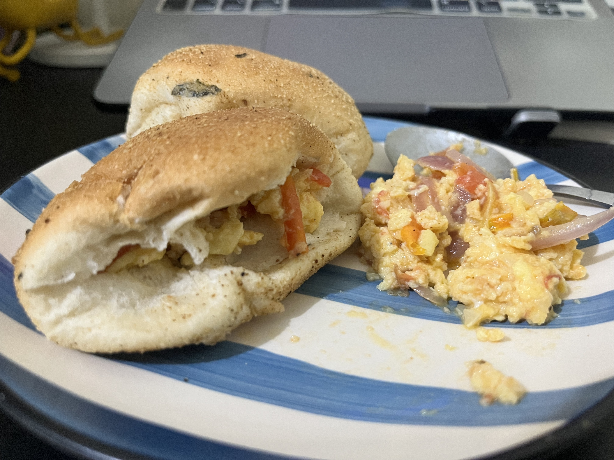

How to make Egg & Tomato Pandesal

Description
Traditional pandesal with sauteed egg and tomatoes as palaman (what goes in a bread, such as a spread), perfectly eaten for breakfast with coffee.
Ingredients
- pandesal
- eggs, 4 pieces
- tomatoes, 3 pieces
- garlic, 2 cloves
- onion, 1 bulb
- butter, 2 tablespoons
- MSG, to taste
- salt, to taste
- black pepper, to taste
- rosemary or thyme, to taste
Steps
- Slice the onion into thin slices. Slice the tomatoes into small medium-sized cubes. Mince the garlic finely.
- Saute the onion, tomato, and garlic in a pan with butter. Add a little water to help soften the tomatoes. Season with herbs and black pepper to taste.
- In a bowl, beat the eggs, adding in salt to your preference.
- Crush the tomatoes with your spatula and add in the beaten eggs.
- Scramble the egg and tomato mixture until the egg develops some structure. Doneness and how stiff the eggs would be depend on your preference.
- Once cooked, transfer to a plate. Open the pandesal on its side and fill it with eggs. Enjoy!
Home